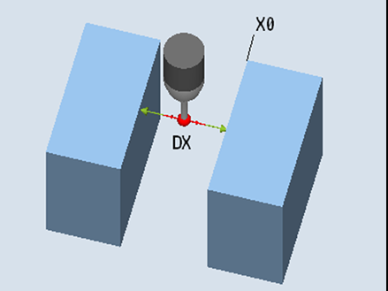

With this measuring version, a workpiece probe can be calibrated in an axis of the machining plane selected by the user, between two reference surfaces parallel to one another.
The probe traverses with constant spindle alignment in the selected axis, between the reference surfaces. The traversing path must be at right angles to the reference surfaces.
The determined calibration value (trigger point + positional deviation) and the probe ball diameter are transferred into the addressed calibration data field. When the function "Determine positional deviation" is selected, the trigger points and the position deviation are written to the corresponding calibration parameters separately.
Calibrate: Radius between 2 edges (CYCLE976)
The probe must be active as tool.
Tool type of the probe:
3D multi probe (type 710)
The probe must be positioned at the calibration height, approximately in the middle between the two edges.
The center of the probe is located in the middle between the two reference surfaces.